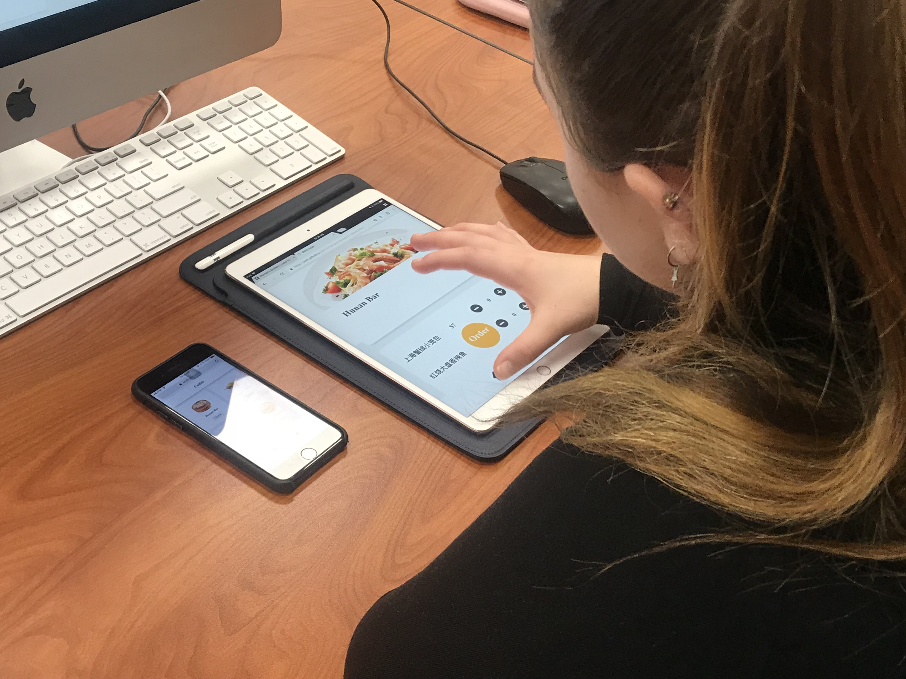

Target Audience Test
Q&A 1
Question: Could you understand what is the app about?
Test Result: My audiences can definitely understand it is a food delivery app. Even I use Chinese for dish name, they can still
know what does it mean.
Q&A 2
Question: Have you visited this similar app before? and how often you use it?
Test Result: they are familiar with food app, and they can use each function quickly and totaly get the point of each page.
Q&A 3
Question: Who do you think the intended audience is?
Test Result: After seeing Chinese and English combination, they correctly guess my audience is Chinese students or International people in Davis
Q&A 4
Question: Could you find what you were looking for?
Test Result: They get almost all the info they need to order and they suggested that it would be perfect if adding
restaurant specialization suggestion and discription.
Q&A 5
Question: Was it easy to get to the home page from the page you started on?
Test Result: \(^o^)/YES! But one of users ignored the home button to go back to homepage. I think it is becuase it was present on the pc, so they prefer to click return cutton on the brower.
Q&A 6
Question: Was there something missing you were expecting to see?
Test Result: they also want to see different information for different restaurant, but I don't have the backend storage.
They want to see the branding style, like different color.
Q&A 7
Question: What would encourage you to return to this app in the future?
Test Result: they love the images and the simple style and function. It is easy to use. They also want more food suggestions and customer serive phone number or message box.
Q&A 8
Question: Name your three favorite things about the site, and your three least favorite
Pro: Images, Simplicity of visualization, Simplicity of the user flow.
Cons: Info hidden wrongly, No branding color, Not cohesive font
